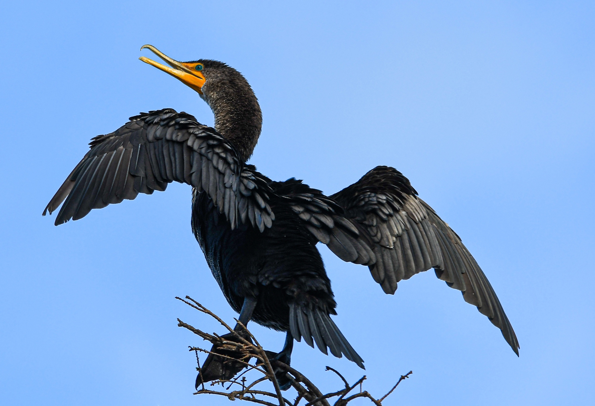

Cramorant
Cramorant, the Gulp Pokemon is a flying water type pokemon based on a cormorant. Cramorant is a gluttonous Pokémon that can swallow other Pokémon whole. Its preferred prey are Arrokuda, but sometimes it swallows other Pokémon such as Pikachu, attempting to spit them out if they realize their mistake.

Cormorant
Cormorants nest in colonies around the shore, on trees, islets or cliffs. They are coastal birds, and some have colonised inland waters. They range around the world, except for the central Pacific islands. Cormorant eat fish and dive into water to hunt for food. After hunting, they often spread their wings to dry them.